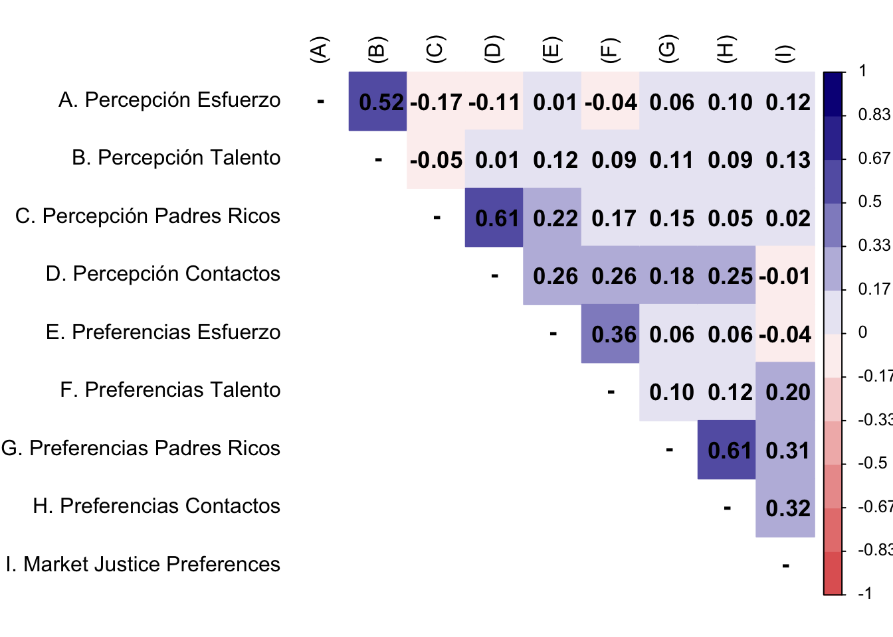
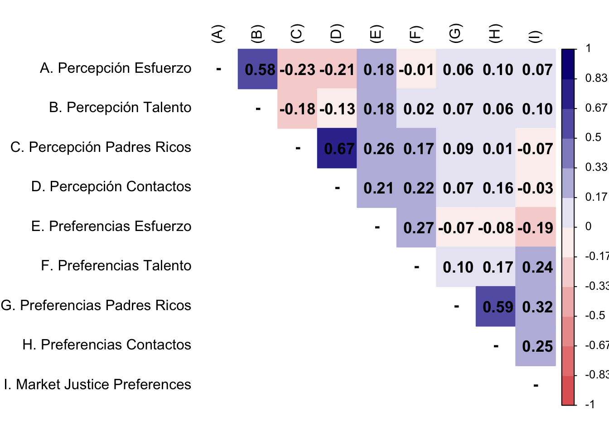

1 Presentation
This is the multivariate analysis code for the paper “Changes in Beliefs about Meritocracy and Preferences for Market Justice in the Chilean School Context”. The prepared data is edumer_students_long.RData.
2 Libraries
3 Data
Show the code
load(file = here("output/data/db_proc.RData"))
glimpse(db_proc)Rows: 1,490
Columns: 24
$ id_estudiante <dbl> 191617388, 191617388, 191617613, 191617613, 19164733…
$ ola <fct> 1, 2, 1, 2, 1, 2, 1, 2, 1, 1, 1, 1, 2, 1, 2, 1, 2, 1…
$ curse_level <fct> 6to, 7mo, 1ro, 2do, 6to, 7mo, 6to, 7mo, 6to, 6to, 6t…
$ perc_effort <dbl> 3, 2, 3, 3, 4, 2, 3, 3, 4, 3, 3, 2, 2, 3, 3, 3, 4, 3…
$ perc_talent <dbl> 3, 3, 3, 3, 4, 2, 4, 3, 4, 3, 3, 3, 3, 3, 3, 3, 3, 3…
$ perc_rich_parents <dbl> 2, 4, 4, 3, 2, 4, 4, 4, 3, 2, 4, 4, 3, 4, 4, 4, 3, 4…
$ perc_contact <dbl> 3, 4, 4, 3, 3, 4, 4, 4, 2, 2, 4, 3, 2, 4, 3, 3, 3, 3…
$ pref_effort <dbl> 4, 3, 4, 3, 3, 3, 4, 4, 3, 3, 4, 4, 4, 4, 4, 4, 4, 4…
$ pref_talent <dbl> 3, 2, 3, 3, 2, 2, 2, 4, 2, 2, 3, 3, 3, 4, 3, 3, 4, 3…
$ pref_rich_parents <dbl> 2, 2, 4, 2, 2, 2, 2, 2, 3, 2, 2, 3, 4, 2, 2, 3, 2, 3…
$ pref_contact <dbl> 3, 2, 4, 2, 2, 2, 3, 3, 2, 3, 2, 3, 3, 2, 2, 3, 2, 3…
$ school_effort <dbl> 4, 3, 3, 3, 4, 3, 3, 3, 3, 2, 4, 4, 4, 3, 3, 3, 4, 3…
$ school_talent <dbl> 4, 3, 3, 3, 4, 3, 3, 3, 4, 2, 4, 4, 3, 4, 4, 3, 3, 3…
$ inequality <dbl> 2, 3, 3, 4, 4, 3, 4, 4, 2, 3, 4, 4, 4, 4, 2, 4, 4, 3…
$ just_educ <dbl> 3, 2, 3, 3, 2, 1, 1, 2, 1, 1, 3, 4, 1, 2, 3, 3, 4, 3…
$ just_health <dbl> 3, 2, 2, 2, 2, 1, 1, 1, 1, 1, 3, 4, 1, 2, 3, 2, 1, 1…
$ just_pension <dbl> 2, 2, 2, 2, 4, 1, 1, 1, 3, 1, 2, 4, 1, 1, 2, 3, 1, 2…
$ gender <fct> Hombre, Hombre, Mujer, Mujer, Hombre, Otro, Mujer, M…
$ age <dbl> 13, 13, 17, 17, 13, 13, 12, 12, 13, 13, 13, 13, 13, …
$ books <fct> Menos de 25, Menos de 25, Menos de 25, Menos de 25, …
$ cohort_level <fct> Básica, Básica, Media, Media, Básica, Básica, Básica…
$ mjp <dbl> 2.666667, 2.000000, 2.333333, 2.333333, 2.666667, 1.…
$ age2 <dbl> 169, 169, 289, 289, 169, 169, 144, 144, 169, 169, 16…
$ parental_educ <fct> Superior técnica, Superior técnica, Universitaria o …4 Analysis
4.1 Descriptives
Data Frame Summary
db_proc
Dimensions: 1490 x 24Duplicates: 0
| No | Variable | Label | Stats / Values | Freqs (% of Valid) | Graph | Valid | Missing | ||||||||||||||||||||||||||||||||||||||||||||||||||||||||||||||||||||||
|---|---|---|---|---|---|---|---|---|---|---|---|---|---|---|---|---|---|---|---|---|---|---|---|---|---|---|---|---|---|---|---|---|---|---|---|---|---|---|---|---|---|---|---|---|---|---|---|---|---|---|---|---|---|---|---|---|---|---|---|---|---|---|---|---|---|---|---|---|---|---|---|---|---|---|---|---|---|
| 1 | id_estudiante [numeric] | Identificador único estudiante |
|
914 distinct values |  |
1490 (100.0%) | 0 (0.0%) | ||||||||||||||||||||||||||||||||||||||||||||||||||||||||||||||||||||||
| 2 | ola [factor] | Ola |
|
|
 |
1490 (100.0%) | 0 (0.0%) | ||||||||||||||||||||||||||||||||||||||||||||||||||||||||||||||||||||||
| 3 | curse_level [factor] | Curso estudiante |
|
|
 |
1490 (100.0%) | 0 (0.0%) | ||||||||||||||||||||||||||||||||||||||||||||||||||||||||||||||||||||||
| 4 | perc_effort [numeric] | En Chile, las personas son recompensadas por sus esfuerzos |
|
|
 |
1490 (100.0%) | 0 (0.0%) | ||||||||||||||||||||||||||||||||||||||||||||||||||||||||||||||||||||||
| 5 | perc_talent [numeric] | En Chile, las personas son recompensadas por su inteligencia y habilidad |
|
|
 |
1490 (100.0%) | 0 (0.0%) | ||||||||||||||||||||||||||||||||||||||||||||||||||||||||||||||||||||||
| 6 | perc_rich_parents [numeric] | En Chile, a quienes tienen padres ricos les va mucho mejor en la vida |
|
|
 |
1490 (100.0%) | 0 (0.0%) | ||||||||||||||||||||||||||||||||||||||||||||||||||||||||||||||||||||||
| 7 | perc_contact [numeric] | En Chile, quienes tienen buenos contactos les va mejor en la vida |
|
|
 |
1490 (100.0%) | 0 (0.0%) | ||||||||||||||||||||||||||||||||||||||||||||||||||||||||||||||||||||||
| 8 | pref_effort [numeric] | Quienes más se esfuerzan deberían obtener mayores recompensas que quienes se esfuerzan menos |
|
|
 |
1490 (100.0%) | 0 (0.0%) | ||||||||||||||||||||||||||||||||||||||||||||||||||||||||||||||||||||||
| 9 | pref_talent [numeric] | Quienes poseen más talento deberían obtener mayores recompensas que quienes poseen menos talento |
|
|
 |
1490 (100.0%) | 0 (0.0%) | ||||||||||||||||||||||||||||||||||||||||||||||||||||||||||||||||||||||
| 10 | pref_rich_parents [numeric] | Está bien que quienes tienen padres ricos les vaya bien en la vida |
|
|
 |
1490 (100.0%) | 0 (0.0%) | ||||||||||||||||||||||||||||||||||||||||||||||||||||||||||||||||||||||
| 11 | pref_contact [numeric] | Está bien que quienes tienen buenos contactos les vaya bien en la vida |
|
|
 |
1490 (100.0%) | 0 (0.0%) | ||||||||||||||||||||||||||||||||||||||||||||||||||||||||||||||||||||||
| 12 | school_effort [numeric] | En esta escuela, quienes se esfuerzan obtienen buenas notas |
|
|
 |
1490 (100.0%) | 0 (0.0%) | ||||||||||||||||||||||||||||||||||||||||||||||||||||||||||||||||||||||
| 13 | school_talent [numeric] | En esta escuela, quienes son inteligentes obtienen buenas notas |
|
|
 |
1490 (100.0%) | 0 (0.0%) | ||||||||||||||||||||||||||||||||||||||||||||||||||||||||||||||||||||||
| 14 | inequality [numeric] | Las diferencias económicas entre ricos y pobres en Chile son demasiado grandes |
|
|
 |
1490 (100.0%) | 0 (0.0%) | ||||||||||||||||||||||||||||||||||||||||||||||||||||||||||||||||||||||
| 15 | just_educ [numeric] | Está bien que aquellos que puedan pagar más tengan mejor educación |
|
|
 |
1490 (100.0%) | 0 (0.0%) | ||||||||||||||||||||||||||||||||||||||||||||||||||||||||||||||||||||||
| 16 | just_health [numeric] | Está bien que aquellos que puedan pagar más tengan mejor acceso a salud |
|
|
 |
1490 (100.0%) | 0 (0.0%) | ||||||||||||||||||||||||||||||||||||||||||||||||||||||||||||||||||||||
| 17 | just_pension [numeric] | Está bien que en Chile las personas con mayores ingresos puedan tener mejores pensiones que las personas de ingresos más bajos. |
|
|
 |
1490 (100.0%) | 0 (0.0%) | ||||||||||||||||||||||||||||||||||||||||||||||||||||||||||||||||||||||
| 18 | gender [factor] | Género |
|
|
 |
1490 (100.0%) | 0 (0.0%) | ||||||||||||||||||||||||||||||||||||||||||||||||||||||||||||||||||||||
| 19 | age [numeric] | Edad |
|
|
 |
1490 (100.0%) | 0 (0.0%) | ||||||||||||||||||||||||||||||||||||||||||||||||||||||||||||||||||||||
| 20 | books [factor] | Libros en el hogar |
|
|
 |
1490 (100.0%) | 0 (0.0%) | ||||||||||||||||||||||||||||||||||||||||||||||||||||||||||||||||||||||
| 21 | cohort_level [factor] | Cohorte estudiante |
|
|
 |
1490 (100.0%) | 0 (0.0%) | ||||||||||||||||||||||||||||||||||||||||||||||||||||||||||||||||||||||
| 22 | mjp [numeric] | Justicia de mercado |
|
|
 |
1490 (100.0%) | 0 (0.0%) | ||||||||||||||||||||||||||||||||||||||||||||||||||||||||||||||||||||||
| 23 | age2 [numeric] | Edad^2 |
|
|
|
1490 (100.0%) | 0 (0.0%) | ||||||||||||||||||||||||||||||||||||||||||||||||||||||||||||||||||||||
| 24 | parental_educ [factor] | Nivel educacional parental |
|
|
 |
1490 (100.0%) | 0 (0.0%) | ||||||||||||||||||||||||||||||||||||||||||||||||||||||||||||||||||||||
Generated by summarytools 1.0.1 (R version 4.2.2)
2025-01-20
4.2 Measurement model
Show the code
M1 <- psych::polychoric(db_proc[db_proc$ola==1,][c(4:11,22)])
P1 <- cor(db_proc[db_proc$ola==1,][c(4:11,22)], method = "pearson", use = "complete.obs")
diag(M1$rho) <- NA
diag(P1) <- NA
M1$rho[9,] <- P1[9,]
M2 <- psych::polychoric(db_proc[db_proc$ola==2,][c(4:11,22)])
P2 <- cor(db_proc[db_proc$ola==2,][c(4:11,22)], method = "pearson", use = "complete.obs")
diag(M2$rho) <- NA
diag(P2) <- NA
M2$rho[9,] <- P2[9,]
rownames(M1$rho) <- c("A. Percepción Esfuerzo",
"B. Percepción Talento",
"C. Percepción Padres Ricos",
"D. Percepción Contactos",
"E. Preferencias Esfuerzo",
"F. Preferencias Talento",
"G. Preferencias Padres Ricos",
"H. Preferencias Contactos",
"I. Market Justice Preferences")
#set Column names of the matrix
colnames(M1$rho) <-c("(A)", "(B)","(C)","(D)","(E)","(F)","(G)",
"(H)","(I)")
rownames(P1) <- c("A. Percepción Esfuerzo",
"B. Percepción Talento",
"C. Percepción Padres Ricos",
"D. Percepción Contactos",
"E. Preferencias Esfuerzo",
"F. Preferencias Talento",
"G. Preferencias Padres Ricos",
"H. Preferencias Contactos",
"I. Market Justice Preferences")
#set Column names of the matrix
colnames(P1) <-c("(A)", "(B)","(C)","(D)","(E)","(F)","(G)",
"(H)","(I)")
rownames(M2$rho) <- c("A. Percepción Esfuerzo",
"B. Percepción Talento",
"C. Percepción Padres Ricos",
"D. Percepción Contactos",
"E. Preferencias Esfuerzo",
"F. Preferencias Talento",
"G. Preferencias Padres Ricos",
"H. Preferencias Contactos",
"I. Market Justice Preferences")
#set Column names of the matrix
colnames(M2$rho) <-c("(A)", "(B)","(C)","(D)","(E)","(F)","(G)",
"(H)","(I)")
rownames(P2) <- c("A. Percepción Esfuerzo",
"B. Percepción Talento",
"C. Percepción Padres Ricos",
"D. Percepción Contactos",
"E. Preferencias Esfuerzo",
"F. Preferencias Talento",
"G. Preferencias Padres Ricos",
"H. Preferencias Contactos",
"I. Market Justice Preferences")
#set Column names of the matrix
colnames(P2) <-c("(A)", "(B)","(C)","(D)","(E)","(F)","(G)",
"(H)","(I)")Show the code
corrplot::corrplot(
M1$rho,
method = "color",
type = "upper",
col = colorRampPalette(c("#E16462", "white", "#0D0887"))(12),
tl.pos = "lt",
tl.col = "black",
addrect = 2,
rect.col = "black",
addCoef.col = "black",
cl.cex = 0.8,
cl.align.text = 'l',
number.cex = 1.1,
na.label = "-",
bg = "white"
)

Show the code
corrplot::corrplot(
M2$rho,
method = "color",
type = "upper",
col = colorRampPalette(c("#E16462", "white", "#0D0887"))(12),
tl.pos = "lt",
tl.col = "black",
addrect = 2,
rect.col = "black",
addCoef.col = "black",
cl.cex = 0.8,
cl.align.text = 'l',
number.cex = 1.1,
na.label = "-",
bg = "white"
)

Show the code
db_1 <- subset(db_proc, ola == 1)
db_2 <- subset(db_proc, ola == 2)
model_cfa <- '
perc_merit = ~ perc_effort + perc_talent
perc_nmerit = ~ perc_rich_parents + perc_contact
pref_merit = ~ pref_effort + pref_talent
pref_nmerit = ~ pref_rich_parents + pref_contact
'
m1_cfa <- cfa(model = model_cfa,
data = db_1,
estimator = "DWLS",
ordered = T,
std.lv = F)
m2_cfa <- cfa(model = model_cfa,
data = db_2,
estimator = "DWLS",
ordered = T,
std.lv = F)Show the code
left_join(
standardizedsolution(m1_cfa) %>%
filter(op=="=~") %>%
select(lhs,rhs,loadings_w01=est.std,pvalue_w01=pvalue),
standardizedsolution(m2_cfa) %>%
filter(op=="=~") %>%
select(lhs,rhs,loadings_w02=est.std,pvalue_w02=pvalue)
) %>%
mutate(
across(
.cols = c(pvalue_w01, pvalue_w02),
.fns = ~ case_when(
. < 0.05 & . > 0.01 ~ "*",
. <= 0.01 ~ "**",
TRUE ~ "")
),
loadings_w01 = paste(round(loadings_w01, 3), pvalue_w01, sep = " "),
loadings_w02 = paste(round(loadings_w02, 3), pvalue_w02, sep = " "),
lhs = case_when(
lhs == "perc_merit" ~ "Percepción meritocrática",
lhs == "perc_nmerit" ~ "Percepción no meritocrática",
lhs == "pref_merit" ~ "Preferencia meritocrática",
lhs == "pref_nmerit" ~ "Preferencia no meritocrática"),
rhs = case_when(
rhs == "perc_effort" ~ "Percepción esfuerzo",
rhs == "perc_talent" ~ "Percepción talento",
rhs == "perc_rich_parents" ~ "Percepción padres ricos",
rhs == "perc_contact" ~ "Percepción contactos",
rhs == "pref_effort" ~ "Preferencia esfuerzo",
rhs == "pref_talent" ~ "Preferencia talento",
rhs == "pref_rich_parents" ~ "Preferencia padres ricos",
rhs == "pref_contact" ~ "Preferencia contactos"),
simbol = "=~"
) %>%
select(lhs, simbol, rhs, loadings_w01, loadings_w02) %>%
kableExtra::kable(format = "markdown",
booktabs= T,
escape = F,
align = 'c',
col.names = c("Factor", "", "Indicador", "Cargas Ola 1", "Cargas Ola 2"),
caption = NULL) %>%
kableExtra::add_footnote(label = "** p<0.01, * p<0.5", notation = "none")| Factor | Indicador | Cargas Ola 1 | Cargas Ola 2 | |
|---|---|---|---|---|
| Percepción meritocrática | =~ | Percepción esfuerzo | 0.851 ** | 0.853 ** |
| Percepción meritocrática | =~ | Percepción talento | 0.609 ** | 0.683 ** |
| Percepción no meritocrática | =~ | Percepción padres ricos | 0.647 ** | 0.827 ** |
| Percepción no meritocrática | =~ | Percepción contactos | 0.938 ** | 0.809 ** |
| Preferencia meritocrática | =~ | Preferencia esfuerzo | 0.602 ** | 0.658 ** |
| Preferencia meritocrática | =~ | Preferencia talento | 0.591 ** | 0.41 ** |
| Preferencia no meritocrática | =~ | Preferencia padres ricos | 0.744 ** | 0.719 ** |
| Preferencia no meritocrática | =~ | Preferencia contactos | 0.824 ** | 0.821 ** |
Note: ^^ ** p<0.01, * p<0.5
Show the code
cfa_tab_fit <- function(models,
names = NULL,
colnames_fit = c("","$N$","Estimator","$\\chi^2$ (df)","CFI","TLI","RMSEA 90% CI [Lower-Upper]", "SRMR")) {
get_fit_df <- function(model) {
sum_fit <- fitmeasures(model, output = "matrix")[c("chisq","pvalue","df","cfi","tli",
"rmsea","rmsea.ci.lower","rmsea.ci.upper",
"srmr"),]
sum_fit$nobs <- nobs(model)
sum_fit$est <- summary(model)$optim$estimator
sum_fit <- data.frame(sum_fit) %>%
dplyr::mutate(
dplyr::across(
.cols = c(cfi, tli, rmsea, rmsea.ci.lower, rmsea.ci.upper, srmr),
.fns = ~ round(., 3)
),
stars = gtools::stars.pval(pvalue),
chisq = paste0(round(chisq,3), " (", df, ") ", stars),
rmsea.ci= paste0(rmsea, " [", rmsea.ci.lower, "-", rmsea.ci.upper, "]")
) %>%
dplyr::select(nobs, est, chisq, cfi, tli, rmsea.ci, srmr)
return(sum_fit)
}
fit_list <- purrr::map(models, get_fit_df)
for (i in seq_along(fit_list)) {
fit_list[[i]]$names <- names[i]
}
sum_fit <- dplyr::bind_rows(fit_list)
fit_table <- sum_fit %>%
dplyr::select(names, dplyr::everything()) %>%
kableExtra::kable(
format = "markdown",
digits = 3,
booktabs = TRUE,
col.names = colnames_fit,
caption = NULL
) %>%
kableExtra::kable_styling(
full_width = TRUE,
font_size = 11,
latex_options = "HOLD_position",
bootstrap_options = c("striped", "bordered")
)
return(
list(
fit_table = fit_table,
sum_fit = sum_fit)
)
}
cfa_tab_fit(
models = list(m1_cfa, m2_cfa),
names = c("Ola 1", "Ola 2")
)$fit_table| \(N\) | Estimator | \(\chi^2\) (df) | CFI | TLI | RMSEA 90% CI [Lower-Upper] | SRMR | |
|---|---|---|---|---|---|---|---|
| Ola 1 | 833 | DWLS | 40.383 (14) *** | 0.989 | 0.978 | 0.048 [0.031-0.065] | 0.039 |
| Ola 2 | 657 | DWLS | 49.196 (14) *** | 0.984 | 0.967 | 0.062 [0.044-0.081] | 0.050 |
Show the code
scores_1 <- lavPredict(m1_cfa)
db_1$perc_merit_score <- scores_1[, "perc_merit"]
db_1$perc_nmerit_score <- scores_1[, "perc_nmerit"]
db_1$pref_merit_score <- scores_1[, "pref_merit"]
db_1$pref_nmerit_score <- scores_1[, "pref_nmerit"]
scores_2 <- lavPredict(m2_cfa)
db_2$perc_merit_score <- scores_2[, "perc_merit"]
db_2$perc_nmerit_score <- scores_2[, "perc_nmerit"]
db_2$pref_merit_score <- scores_2[, "pref_merit"]
db_2$pref_nmerit_score <- scores_2[, "pref_nmerit"]
db_proc <- rbind(db_1, db_2)4.3 Longitudinal multilevel models
Show the code
m0 <- lmer(mjp ~ 1 + (1 | id_estudiante),
data = db_proc)
performance::icc(m0, by_group = T)# ICC by Group
Group | ICC
---------------------
id_estudiante | 0.433Show the code
db_proc <- db_proc %>%
group_by(id_estudiante) %>%
mutate(inequality_mean = mean(inequality, na.rm = T),
inequality_cwc = inequality - inequality_mean,
perc_merit_score_mean = mean(perc_merit_score, na.rm = T),
perc_merit_score_cwc = perc_merit_score - perc_merit_score_mean,
perc_nmerit_score_mean = mean(perc_nmerit_score, na.rm = T),
perc_nmerit_score_cwc = perc_nmerit_score - perc_nmerit_score_mean,
pref_merit_score_mean = mean(pref_merit_score, na.rm = T),
pref_merit_score_cwc = pref_merit_score - pref_merit_score_mean,
pref_nmerit_score_mean = mean(pref_nmerit_score, na.rm = T),
pref_nmerit_score_cwc = pref_nmerit_score - pref_nmerit_score_mean,
school_talent_mean = mean(school_talent, na.rm = T),
school_talent_cwc = school_talent - school_talent_mean,
school_effort_mean = mean(school_effort, na.rm = T),
school_effort_cwc = school_effort - school_effort_mean
) %>%
ungroup()
m1 <- lmer(mjp ~ 1 + perc_merit_score_mean + perc_merit_score_cwc + (1 | id_estudiante),
data = db_proc)
m2 <- lmer(mjp ~ 1 + perc_nmerit_score_mean + perc_nmerit_score_cwc + (1 | id_estudiante),
data = db_proc)
m3 <- lmer(mjp ~ 1 + pref_merit_score_mean + pref_merit_score_cwc + (1 | id_estudiante),
data = db_proc)
m4 <- lmer(mjp ~ 1 + pref_nmerit_score_mean + pref_nmerit_score_cwc + (1 | id_estudiante),
data = db_proc)
m5 <- lmer(mjp ~ 1 + perc_merit_score_mean + perc_merit_score_cwc +
perc_nmerit_score_mean + perc_nmerit_score_cwc +
pref_merit_score_mean + pref_merit_score_cwc +
pref_nmerit_score_mean + pref_nmerit_score_cwc +
(1 | id_estudiante),
data = db_proc)
m6 <- lmer(mjp ~ 1 + perc_merit_score_mean + perc_merit_score_cwc +
perc_nmerit_score_mean + perc_nmerit_score_cwc +
pref_merit_score_mean + pref_merit_score_cwc +
pref_nmerit_score_mean + pref_nmerit_score_cwc +
school_effort_mean + school_effort_cwc +
school_talent_mean + school_talent_cwc +
(1 | id_estudiante),
data = db_proc)
m7 <- lmer(mjp ~ 1 + perc_merit_score_mean + perc_merit_score_cwc +
perc_nmerit_score_mean + perc_nmerit_score_cwc +
pref_merit_score_mean + pref_merit_score_cwc +
pref_nmerit_score_mean + pref_nmerit_score_cwc +
school_effort_mean + school_effort_cwc +
school_talent_mean + school_talent_cwc +
gender + age + books + parental_educ + cohort_level + ola +
(1 | id_estudiante),
data = db_proc)Show the code
ccoef <- list(
"(Intercept)" = "Intercepto",
perc_merit_score_mean = "Percepción meritocrática (BE)",
perc_merit_score_cwc = "Percepción meritocrática (WE)",
perc_nmerit_score_mean = "Percepción no meritocrática (BE)",
perc_nmerit_score_cwc = "Percepción no meritocrática (WE)",
pref_merit_score_mean = "Preferencia meritocrática (BE)",
pref_merit_score_cwc = "Preferencia meritocrática (WE)",
pref_nmerit_score_mean = "Preferencia no meritocrática (BE)",
pref_nmerit_score_cwc = "Preferencia no meritocrática (WE)",
school_effort_mean = "Esfuerzo escuela (BE)",
school_effort_cwc = "Esfuerzo escuela (WE)",
school_talent_mean = "Talento escuela (BE)",
school_talent_cwc = "Talento escuela (WE)",
genderMujer = "Mujer (Ref.= Hombre)",
age = "Edad",
"booksMás de 25" = "Más de 25 libros (Ref.= Menos de 25)",
"parental_educSecundaria" = "Secundaria",
"parental_educSuperior técnica" = "Superior técnica",
"parental_educUniversitaria o Posgrado" = "Universitaria o posgrado",
"parental_educValor perdido" = "Valor perdido",
cohort_levelMedia = "Media (Ref.= Básica)",
ola2 = "Ola 2 (Ref.= Ola 1)"
)
texreg::htmlreg(list(m1, m2, m3, m4, m5, m6, m7),
custom.model.names = c(paste0("Modelo ", seq(1:7))),
caption = NULL,
stars = c(0.05, 0.01, 0.001),
custom.coef.map = ccoef,
groups = list("Educación parental (Ref.= Primaria o menos)" = 17:20),
custom.note = "\\item Nota: Celdas contienen coeficientes de regresión con errores estándares entre paréntesis. %stars. \\\\ \\item Fuente: elaboración propia con datos agrupados de EDUMER 2022-2023 (n = 914)",
threeparttable = T,
leading.zero = T,
float.pos = "h!",
use.packages = F,
booktabs = T,
scalebox = 1)| Modelo 1 | Modelo 2 | Modelo 3 | Modelo 4 | Modelo 5 | Modelo 6 | Modelo 7 | |
|---|---|---|---|---|---|---|---|
| Intercepto | 2.13*** | 2.12*** | 2.13*** | 2.13*** | 2.12*** | 1.74*** | 1.54*** |
| (0.02) | (0.02) | (0.02) | (0.02) | (0.02) | (0.14) | (0.39) | |
| Percepción meritocrática (BE) | 0.18*** | 0.04 | 0.03 | 0.00 | |||
| (0.04) | (0.04) | (0.04) | (0.04) | ||||
| Percepción meritocrática (WE) | -0.01 | -0.00 | -0.01 | -0.00 | |||
| (0.04) | (0.05) | (0.05) | (0.05) | ||||
| Percepción no meritocrática (BE) | -0.06 | -0.21*** | -0.22*** | -0.18** | |||
| (0.04) | (0.06) | (0.06) | (0.06) | ||||
| Percepción no meritocrática (WE) | 0.13* | 0.07 | 0.07 | 0.07 | |||
| (0.05) | (0.07) | (0.07) | (0.07) | ||||
| Preferencia meritocrática (BE) | 0.05 | 0.11 | 0.06 | 0.07 | |||
| (0.06) | (0.08) | (0.08) | (0.08) | ||||
| Preferencia meritocrática (WE) | 0.08 | -0.01 | -0.03 | -0.04 | |||
| (0.07) | (0.09) | (0.09) | (0.09) | ||||
| Preferencia no meritocrática (BE) | 0.41*** | 0.44*** | 0.43*** | 0.41*** | |||
| (0.04) | (0.04) | (0.04) | (0.04) | ||||
| Preferencia no meritocrática (WE) | 0.26*** | 0.24*** | 0.24*** | 0.23*** | |||
| (0.05) | (0.05) | (0.05) | (0.05) | ||||
| Esfuerzo escuela (BE) | -0.05 | -0.05 | |||||
| (0.03) | (0.03) | ||||||
| Esfuerzo escuela (WE) | 0.03 | 0.03 | |||||
| (0.04) | (0.04) | ||||||
| Talento escuela (BE) | 0.17*** | 0.15*** | |||||
| (0.04) | (0.04) | ||||||
| Talento escuela (WE) | 0.03 | 0.03 | |||||
| (0.04) | (0.04) | ||||||
| Mujer (Ref.= Hombre) | -0.18*** | ||||||
| (0.04) | |||||||
| Edad | 0.03 | ||||||
| (0.03) | |||||||
| Más de 25 libros (Ref.= Menos de 25) | 0.00 | ||||||
| (0.04) | |||||||
| Educación parental (Ref.= Primaria o menos) | |||||||
| Secundaria | -0.06 | ||||||
| (0.05) | |||||||
| Superior técnica | -0.11 | ||||||
| (0.08) | |||||||
| Universitaria o posgrado | -0.15 | ||||||
| (0.10) | |||||||
| Valor perdido | -0.03 | ||||||
| (0.06) | |||||||
| Media (Ref.= Básica) | -0.21* | ||||||
| (0.09) | |||||||
| Ola 2 (Ref.= Ola 1) | 0.03 | ||||||
| (0.03) | |||||||
| AIC | 3250.18 | 3263.98 | 3269.18 | 3142.56 | 3154.59 | 3158.65 | 3185.79 |
| BIC | 3276.71 | 3290.51 | 3295.72 | 3169.09 | 3212.96 | 3238.25 | 3318.45 |
| Log Likelihood | -1620.09 | -1626.99 | -1629.59 | -1566.28 | -1566.29 | -1564.33 | -1567.89 |
| Num. obs. | 1490 | 1490 | 1490 | 1490 | 1490 | 1490 | 1490 |
| Num. groups: id_estudiante | 914 | 914 | 914 | 914 | 914 | 914 | 914 |
| Var: id_estudiante (Intercept) | 0.23 | 0.24 | 0.24 | 0.20 | 0.19 | 0.18 | 0.17 |
| Var: Residual | 0.32 | 0.32 | 0.32 | 0.31 | 0.31 | 0.31 | 0.31 |
| Nota: Celdas contienen coeficientes de regresión con errores estándares entre paréntesis. ***p < 0.001; **p < 0.01; *p < 0.05. \ Fuente: elaboración propia con datos agrupados de EDUMER 2022-2023 (n = 914) | |||||||